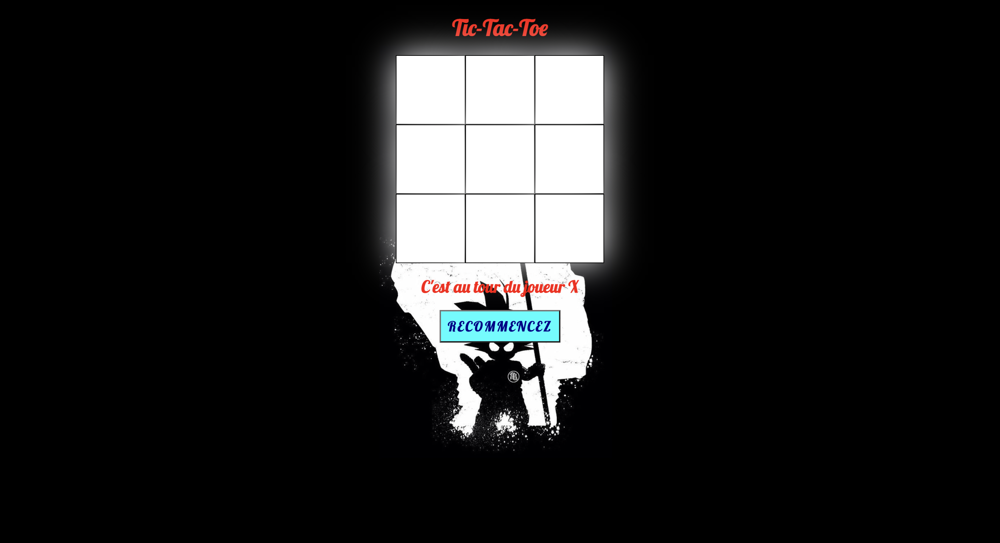

Tic-Tac-Toe
Le jeux du morpion ou comme on peut appeler Tic-Tac-Toe est jeu interactif qui été fait par moi-même comme projet personnel. J'ai décider de créer un jeux de Tic-Tac-Toe car j'étais intrigué à savoir comment et quoi utiliser pour créer ce type de jeux. J'ai alors fait mes recherches et j'ai d'écouvert qu'on pouvait créer ce jeux en html, css, javascript. Cela m'a notamment permis de perfectionner mes connaisances en javascript.
Temps : 6 heures
Type : Jeux
Ce projet a été fait avec : HTML, CSS, JAVASCRIPT
Réalisé par : Mouhammad Wagane Diouf